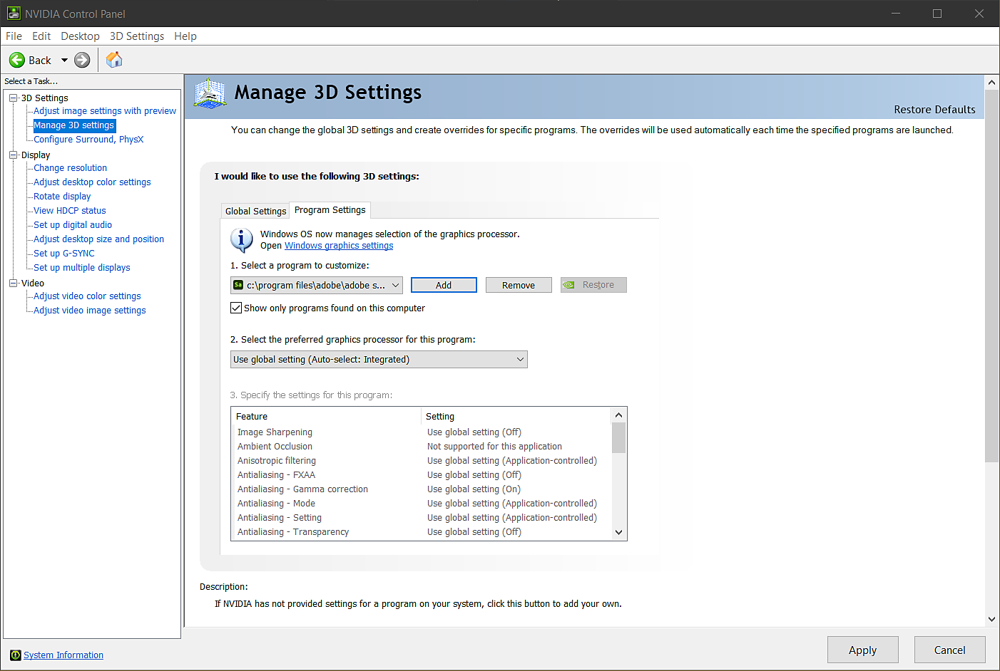

If you are using an NVIDIA GPU but find that performance is sluggish, there are two common causes:
To update your NVIDIA drivers:
Once the latest drivers are installed, open Sampler to see if performance has improved. If performance is slow, Sampler may be using the incorrect GPU.
To check which GPU Sampler is using, do the following:

Once you have followed this process, open Sampler to see if performance has improved.